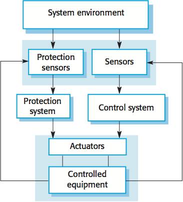
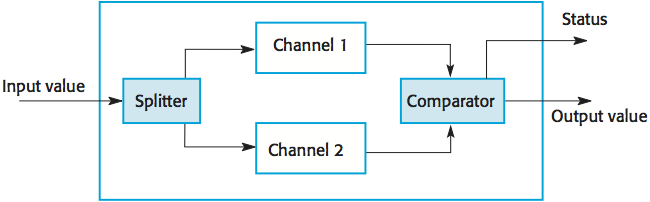
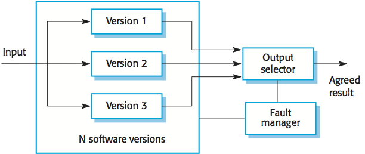

CS 410/510 - Software Engineering
Reliability Engineering
Reference: Sommerville, Software Engineering, 10 ed., Chapter 11
The big picture
In general, software customers expect all software to be dependable. However, for non-critical applications, they may be willing to accept some system failures. Some applications (critical systems) have very high reliability requirements and special software engineering techniques may be used to achieve this.
Reliability terminology
| Term | Description |
| Human error or mistake | Human behavior that results in the introduction of faults into a system. |
| System fault | A characteristic of a software system that can lead to a system error. |
| System error | An erroneous system state that can lead to system behavior that is unexpected by system users. |
| System failure | An event that occurs at some point in time when the system does not deliver a service as expected by its users. |
Failures are a usually a result of system errors that are derived from faults in the system. However, faults do not necessarily result in system errors if the erroneous system state is transient and can be 'corrected' before an error arises. Errors do not necessarily lead to system failures if the error is corrected by built-in error detection and recovery mechanism.
Fault management strategies to achieve reliability:
Availability and reliability
Reliability is the probability of failure-free system operation over a specified time in a given environment for a given purpose. Availability is the probability that a system, at a point in time, will be operational and able to deliver the requested services. Both of these attributes can be expressed quantitatively e.g. availability of 0.999 means that the system is up and running for 99.9% of the time.
The formal definition of reliability does not always reflect the user's perception of a system's reliability. Reliability can only be defined formally with respect to a system specification i.e. a failure is a deviation from a specification. Users don't read specifications and don't know how the system is supposed to behave; therefore, perceived reliability is more important in practice.
Availability is usually expressed as a percentage of the time that the system is available to deliver services e.g. 99.95%. However, this does not take into account two factors:
Removing X% of the faults in a system will not necessarily improve the reliability by X%. Program defects may be in rarely executed sections of the code so may never be encountered by users. Removing these does not affect the perceived reliability. Users adapt their behavior to avoid system features that may fail for them. A program with known faults may therefore still be perceived as reliable by its users.
Reliability requirements
Functional reliability requirements define system and software functions that avoid, detect or tolerate faults in the software and so ensure that these faults do not lead to system failure.
Reliability is a measurable system attribute so non-functional reliability requirements may be specified quantitatively. These define the number of failures that are acceptable during normal use of the system or the time in which the system must be available. Functional reliability requirements define system and software functions that avoid, detect or tolerate faults in the software and so ensure that these faults do not lead to system failure. Software reliability requirements may also be included to cope with hardware failure or operator error.
Reliability metrics are units of measurement of system reliability. System reliability is measured by counting the number of operational failures and, where appropriate, relating these to the demands made on the system and the time that the system has been operational. Metrics include:
Non-functional reliability requirements are specifications of the required reliability and availability of a system using one of the reliability metrics (POFOD, ROCOF or AVAIL). Quantitative reliability and availability specification has been used for many years in safety-critical systems but is uncommon for business critical systems. However, as more and more companies demand 24/7 service from their systems, it makes sense for them to be precise about their reliability and availability expectations.
Functional reliability requirements specify the faults to be detected and the actions to be taken to ensure that these faults do not lead to system failures.
Fault tolerance
In critical situations, software systems must be fault tolerant. Fault tolerance is required where there are high availability requirements or where system failure costs are very high. Fault tolerance means that the system can continue in operation in spite of software failure. Even if the system has been proved to conform to its specification, it must also be fault tolerant as there may be specification errors or the validation may be incorrect.
Fault-tolerant systems architectures are used in situations where fault tolerance is essential. These architectures are generally all based on redundancy and diversity. Examples of situations where dependable architectures are used:
Protection system is a specialized system that is associated with some other control system, which can take emergency action if a failure occurs, e.g. a system to stop a train if it passes a red light, or a system to shut down a reactor if temperature/pressure are too high. Protection systems independently monitor the controlled system and the environment. If a problem is detected, it issues commands to take emergency action to shut down the system and avoid a catastrophe. Protection systems are redundant because they include monitoring and control capabilities that replicate those in the control software. Protection systems should be diverse and use different technology from the control software. They are simpler than the control system so more effort can be expended in validation and dependability assurance. Aim is to ensure that there is a low probability of failure on demand for the protection system.

Self-monitoring architecture is a multi-channel architectures where the system monitors its own operations and takes action if inconsistencies are detected. The same computation is carried out on each channel and the results are compared. If the results are identical and are produced at the same time, then it is assumed that the system is operating correctly. If the results are different, then a failure is assumed and a failure exception is raised. Hardware in each channel has to be diverse so that common mode hardware failure will not lead to each channel producing the same results. Software in each channel must also be diverse, otherwise the same software error would affect each channel. If high-availability is required, you may use several self-checking systems in parallel. This is the approach used in the Airbus family of aircraft for their flight control systems.

N-version programming involves multiple versions of a software system to carry out computations at the same time. There should be an odd number of computers involved, typically 3. The results are compared using a voting system and the majority result is taken to be the correct result. Approach derived from the notion of triple-modular redundancy, as used in hardware systems.

Hardware fault tolerance depends on triple-modular redundancy (TMR). There are three replicated identical components that receive the same input and whose outputs are compared. If one output is different, it is ignored and component failure is assumed. Based on most faults resulting from component failures rather than design faults and a low probability of simultaneous component failure.
Programming for reliability
Good programming practices can be adopted that help reduce the incidence of program faults. These programming practices support fault avoidance, detection, and tolerance.